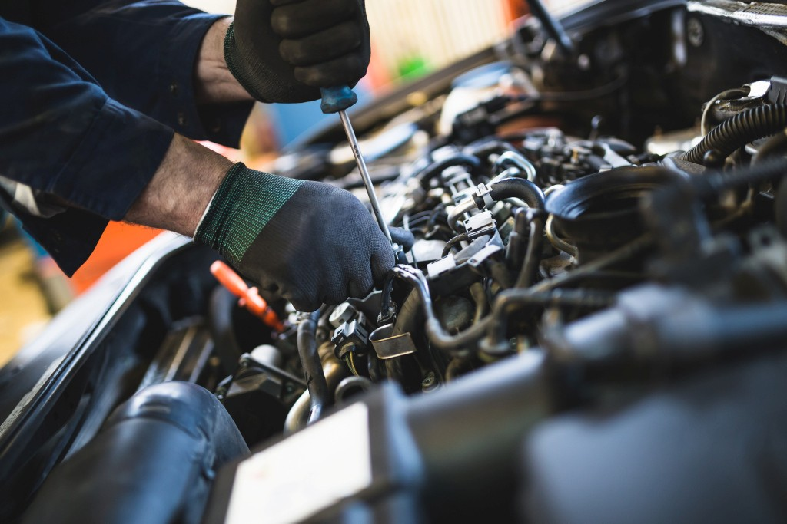

Bei AutoFix bieten wir eine Vielzahl von Autoreparatur- und Wartungsdienstleistungen an, um Ihr Fahrzeug in bestem Zustand zu halten. Hier sind einige unserer Services:
Willkommen bei Auto Seele! Mit über 10 Jahren Erfahrung sind wir bestrebt, hochwertige Autoreparatur- und Wartungsdienstleistungen anzubieten. Unser Team von zertifizierten Mechanikern ist darauf spezialisiert, Ihr Fahrzeug in bestem Zustand zu halten.
Wir legen großen Wert auf Ehrlichkeit, Transparenz und Kundenzufriedenheit. Egal, ob Sie einen schnellen Ölwechsel oder größere Reparaturen benötigen, Sie können sich darauf verlassen, dass wir die Arbeit ordnungsgemäß erledigen.
Wenn Sie Fragen haben oder einen Termin vereinbaren möchten, zögern Sie nicht, uns zu kontaktieren. Wir helfen Ihnen gerne weiter!
Telefon: (0123) 456-7890
E-Mail: info@autoseele.de
Öffnungszeiten:
Besuchen Sie uns an unserem Standort:
Adresse: Lenzfrieder Str. 1, 87437 Kempten (Allgäu)